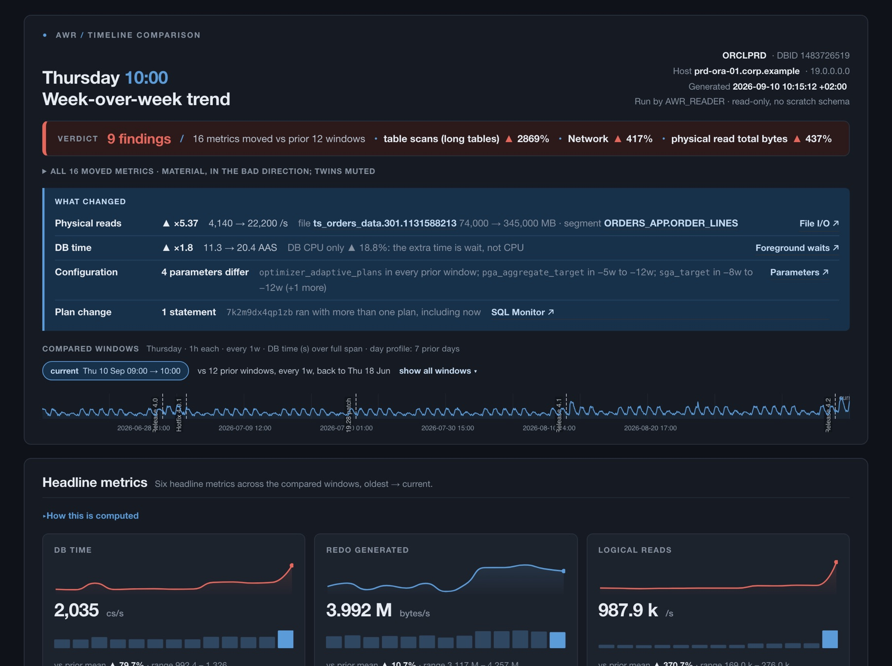

The answer comes first
The report opens with a verdict and the biggest changes.


One read-only command compares your Oracle database's last hour with the same hour on previous weeks and writes one HTML report of what changed.
You need: Oracle 19c with the Diagnostic + Tuning Pack, SQL*Plus, and a DBA login.
$ git clone \ https://github.com/davidbudac/awr_timeline_comparison.git $ cd awr_timeline_comparison
$ ./run_awr_trend.sh user/pw@svcOn the database host: ./run_awr_trend.sh '/ as sysdba'
Defaults are recommended. For options, run ./run_awr_trend.sh --configure.
The report opens with a verdict and the biggest changes.

It only reads AWR history. Safe on production and on a standby.
Each metric is scored against the same hour on prior weeks.
Fleet mode checks every database at once and lists the worst first.
Details for when the defaults are not enough.
A busy Monday morning is only a problem if it is busier than the last four Monday mornings. For each prior week the tool finds the AWR snapshots around the same hour, takes the differences, and scores the current hour against them.

| Item | Value | Notes |
|---|---|---|
| Database writes | 0 | SELECT only. No DDL, DML or scratch schema. Runs on a physical standby. |
| Platform | Oracle 19c | Diagnostic + Tuning Pack licence required. |
| Runtime | SQL*Plus | Optional bash wrapper; plain SQL*Plus works too (Windows). No Python, no agents. |
| Grants | 16 views | Any DBA account, or a dedicated user (list in the README). |
| Output | 1 HTML file | Self-contained. Charts from a CDN, a mirror, or inlined from vendor/ for offline use. Tables never need the charts. |
| Cadence | h, d, w × step | Weekly by default; daily, hourly or any multiple. |
| Window | 0.25 h to 24 h+ | A window more than 15 min off the snapshot grid is skipped, not guessed. |
| Prior windows | 1 to 16 | Scores need at least 3 valid ones. |
| Report sections | 19 | Verdict, headline cards, ASH, findings, load, metrics, waits, Top SQL, SQL Monitor, I/O, parameters and more. |
| In the browser | Normal, Full | Two views, dark mode, row filter, sortable columns, CSV/Markdown export. |
| RAC, multitenant | supported | Per-instance window checks; PDB and migrated-PDB handling. |
| Markers | inline or file | Releases, patches and incidents drawn on every dated chart. |
| Licence | see repository | Bundled ECharts is Apache-2.0. |
From the end time and cadence the tool builds weeks_back + 1 windows, each win_hours wide. A window is skipped if its snapshots are missing, cross a restart or DBID change, or sit more than 15 minutes off.
Counters are differenced per window and divided by its length. The current value is compared with the mean and standard deviation of the valid prior windows: z = (current − mean) ÷ sd.
Each chart is drawn from the same query as its table, so the plotted numbers are the printed numbers.
| Condition | Grade |
|---|---|
| |z| > 3 | large |
| 2 < |z| ≤ 3 | moderate |
| |z| ≤ 2 | typical |
| n < 3 | insufficient history |
| sd = 0 | flat baseline |
A move must also be big enough to matter, and a move in the good direction is graded improved. Rules per metric: scoring policy.

Runs the same comparison on many databases in parallel and builds one page, worst first. Each row expands into a detail panel.
List your databases in fleet.conf, one alias | connect per line. Passwords are masked everywhere.
# alias | connect
prod-emea | /@PRODEMEA
prod-amer | /@PRODAMER
reporting | reporting_ro/@RPTRun it. MARKERS adds an event line to every chart.
$ ./run_awr_fleet.sh fleet.conf $ MARKERS='2026-04-20 14:00|Applied patch 19.22' ./run_awr_fleet.sh fleet.conf
Open reports/awr_fleet_<ts>_run<id>/index.html.
| Case | What happens |
|---|---|
| Database unreachable, timed out or cut short | Red error row at the top with the log tail. Silence is never shown as healthy. |
| Drill-down | Each row prints its single-database command. FLEET_DETAIL=all builds the full reports in the same run. |
| Markers | MARKERS or MARKER_FILE, drawn on every database's timeline. |
| Day profile | FLEET_PROFILE_DAYS=7 adds an hour-of-day heatmap per database. |
| Output | One movable folder per run, no CDN. Optional zip/tar. |
| Exit code | 0 at least one OK, 3 all failed, 2 bad config, 4 archive failed. |
| # | Name | Default | Meaning |
|---|---|---|---|
| 1 | connect | — | user/pw@svc, /, or any SQL*Plus connect string |
| 2 | target_end | AUTO | Last full hour, or 'YYYY-MM-DD HH24:MI' |
| 3 | win_hours | 1 | Width of each window |
| 4 | weeks_back | 4 | How many prior windows |
| 5 | top_n | 10 | Rows per ranking (SQL, waits, segments, files) |
| 6 | inst_num | 0 | RAC: 0 = all instances, >0 = one |
| 7–8 | step step_unit | 1 w | Gap between windows: h, d or w × step |
| 9 | template | comprehensive | See Templates |
| 10 | debug | Y | Progress lines on stdout; report unchanged |
| 11 | marker_file | '' | Marker file (or the MARKERS variable) |
| 12 | profile_days | 0 | Day profile: each hour of the last 24 h vs N prior days |
Environment variables: MARKERS (inline events), ECHARTS (CDN, mirror or local file), ARCHIVE (zip, tgz, tar). More in the cheat sheet.
A specific Monday 09:00 against the four prior Mondays.
$ ./run_awr_trend.sh user/pw@svc '2026-04-13 09:00'Hour by hour for the last four hours; then a short triage report.
$ ./run_awr_trend.sh user/pw@svc AUTO 1 4 10 0 1 h $ ./run_awr_trend.sh user/pw@svc AUTO 1 4 10 0 1 w simple
Event markers on every chart; a day profile against the seven prior days.
$ MARKERS='2026-04-20 14:00|Applied patch 19.22' ./run_awr_trend.sh user/pw@svc $ ./run_awr_trend.sh user/pw@svc AUTO 1 4 10 0 1 w comprehensive Y '' 7
Fully offline file, charts included.
$ ECHARTS=vendor/echarts.min.js ./run_awr_trend.sh user/pw@svcPlain SQL*Plus, no shell. Load the defaults and the driver as two separate commands.
SQL> @sql/defaults.sql SQL> DEFINE target_end = '2026-04-15 09:00' SQL> DEFINE weeks_back = 6 SQL> @awr_trend.sql
| Group | Sections | Source views |
|---|---|---|
| Triage | DB time over the span, headline cards, ASH timeline, findings, compared windows | SYS_TIME_MODEL, SYSSTAT, ACTIVE_SESS_HISTORY, SNAPSHOT |
| Workload | Day profile, utilization, load profile, system metrics, waits | SYSSTAT, SYSMETRIC_SUMMARY, SYSTEM_EVENT, BG_EVENT_SUMMARY |
| SQL | Top SQL five ways with plan changes, per-SQL ASH, SQL Monitor | SQLSTAT, SQLTEXT, ACTIVE_SESS_HISTORY, REPORTS |
| Storage, config | Top segments and files by I/O, I/O by file type, changed parameters | SEG_STAT, FILESTATXS, IOSTAT_FILETYPE, PARAMETER |
A template picks which metrics and waits the report shows. The scoring is the same.
| Template | For | Shows |
|---|---|---|
| comprehensive | DBAs default | Everything; every wait event ranked by time. |
| simple | Triage | A short subset for a thirty-second skim. |
| dev | App teams | Throughput, query work, parsing, network chattiness, app contention. No OS or storage internals. |
Your own template: a folder sql/lib/templates/<name>/ with three list files, plus one line in the driver's whitelist.
Real output files. The first uses generated data so every section has something to show; the others come from a small lab database.
template=simplehourly_simple_template.html
With markersEvents drawn on every chart.hourly_with_markers.html
awr_trend.sql v1.5.0, fleet 0.7.0, September 2026.